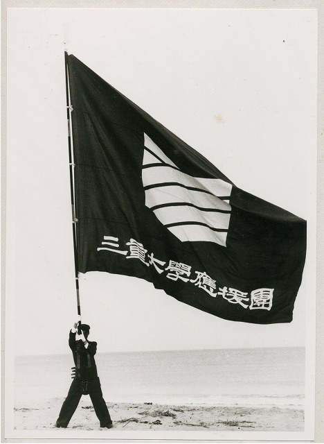
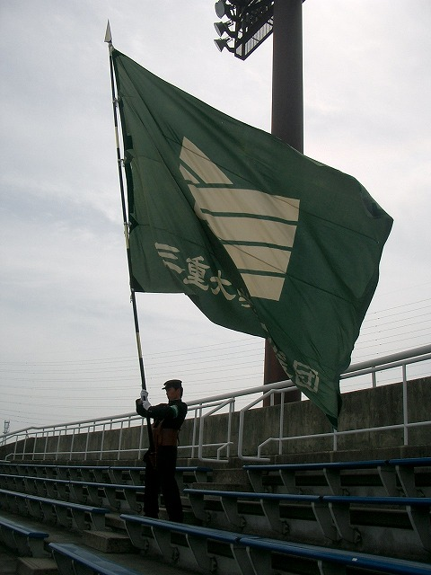
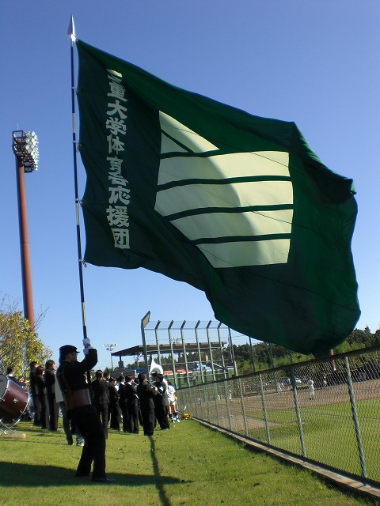
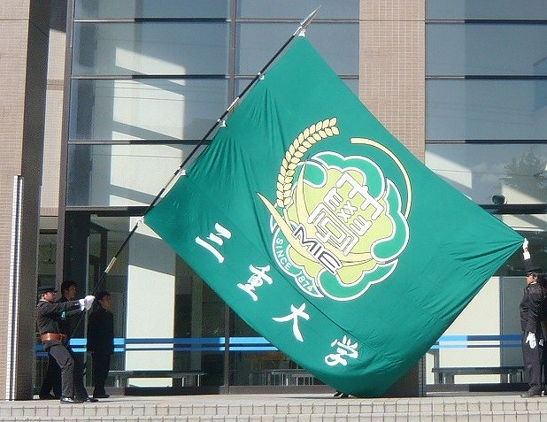
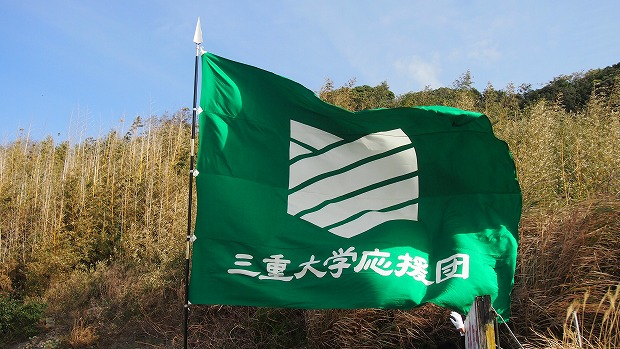

三重大学体育会応援団旧団旗

学章デザイン、色の選定は教育学部美術科教授、宮田修平氏によるものであります。
また、「三重大学応援団」の文字は、教育学部国語科教授、藤田光廣氏によるもので、
字体は隷書体と呼ばれるものであります。
校門に掲げてある「三重大学」の文字もこの字体で書かれております。
この団旗は昭和六十一年五月十三日に完成し、昭和六十一年五月二十一日に行われた硬式野球部壮行会において初めて使用されました。
三重大学体育会応援団新団旗

当団が所有する二本目の大団旗「新大団旗」でございます。
平成五年十二月、和佳沙寮の火事により惜しくも焼失した初代団旗の後に、
前顧問でいらっしゃいます木本凱夫先生、歴代OB・OGの方々を始め、
多くの方々のご尽力によりまして平成六年に見事完成しました。
その後三重大のシンボルとして現在まで長きにわたり
三重大学を見守り続けているのであります。
翠翔旗

この大団旗は、平成九年度旗手長を務められました、大橋邦彦氏を中心に
資金を積み立て、創団二十周年の節目を迎える平成十六年度に、めでたく完成しました。
三重大学体育会応援団史上三本目となる大団旗、
その大きさは最も大きく、青空にはためく鮮やかな翠色の姿は雄大かつ荘厳。
ここ三翠の地から全国へ、そして世界へ羽ばたくという願いをこめ、
「翠翔旗」と名づけられました。
これからの三重大学の幾多にもわたる名勝負、名場面の数々を見守っていくでしょう。
学章旗

この大団旗、当団が初代より受け継がれている三つの活動目標からなる
歴代応援団の活動が、大学に、そして地域社会に高く評価され、
平成二十二年三月十九日に三重大学から寄贈されました。
その名も「学章旗」―当団４本目となるこの大団旗は、
大学の象徴である学章を中心に掲げ、名前の由来にもなっております。
スクールカラーである鮮やかな翠色をはためかせ、
三重大学の新しい象徴として君臨しています。
三重大学の応援団が掲げるこの学章旗がひとたび大空へ舞えば、
大学と地域が総合活性化へと繋がっていくのです。
三翠旗

当団が所有する五本目の大団旗。
学校関係者の方々、地域の方々、OB・OGの方々からのご支援により、
栄えある創団三十周年を記念して、めでたく完成致しました。
応援団に関わる全ての方々への感謝の気持ち、
そして、これからの三重大学と応援団のさらなる発展という願いが、
この新大団旗「三翠旗」に込められています。
「三翠旗」の三翠とは、
三重大学の前身のひとつである三重高等農林学校の校歌にある
「み空のみどり、樹のみどり、波のみどり」に由来するもので、
自然に囲まれ、若人の活気に満ちた三重大学の素晴らしさを表しています。
三十年間の「つながり」を大切に、全力の応援で勝利を導き、
地域の方々に元気を届ける応援団の象徴として、
また、三重大学の素晴らしさを伝え続けるために、この三翠旗がはためくのであります。
上に戻る